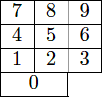

Home Page
F.A.Qs
Statistical Charts
Past Contests
Scheduled Contests
Award Contest
| Online Judge | Problem Set | Authors | Online Contests | User | ||||||
|---|---|---|---|---|---|---|---|---|---|---|
| Web Board Home Page F.A.Qs Statistical Charts | Current Contest Past Contests Scheduled Contests Award Contest | |||||||||
|
Language: RSI
Description You have the goal of becoming the world’s fastest two-fingered typist. In this problem, your goal is to optimize the movement of your fingers when typing numeric values in order to ensure that you finish typing a number in the shortest amount of time possible. Your numeric keyboard has the following layout:  For convenience, we refer to the cells above according to their row and column; hence, the “5” key is at position (2, 2), and the “0” key takes up both positions (4, 1) and (4, 2). At time 0, your left pointer finger is on the “4” key and your right pointer finger is on the “5” key. During each time interval, each finger may press the key underneath it, move vertically one position, or move horizontally one position. Although both fingers may move simultaneously within a single time interval,
Examples
Input The input test file will contain multiple test cases. Each test case consists of a single line containing a string of between 1 and 100 digits. The end-of-file is marked by a line containing the word “eof” and should not be processed. Output For each input case, output the minimum number of time units required to type the given digits. Sample Input 56 71 902 eof Sample Output 3 5 6 Source |
[Submit] [Go Back] [Status] [Discuss]
All Rights Reserved 2003-2013 Ying Fuchen,Xu Pengcheng,Xie Di
Any problem, Please Contact Administrator